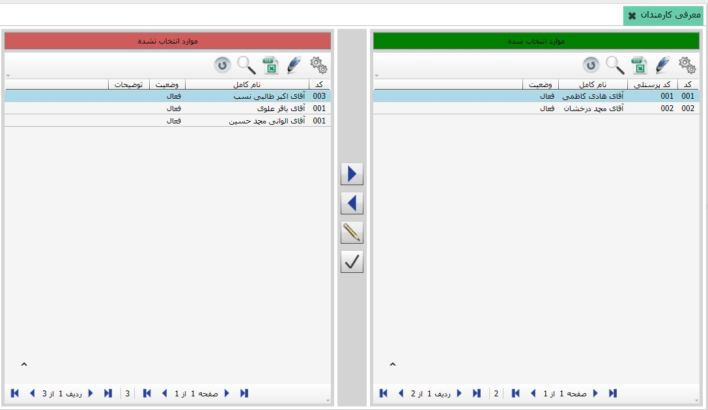

با استفاده از این قسمت می توانید لیست کارمندان خود را به سیستم معرفی نمایید، برای دسترسی به این صفحه از بخش «اطلاعات پایه» روی منوی «معرفی کارمندان» کلیک کنید تا صفحه مربوط به آن نمایش داده شود:
شکل بالا صفحه «معرفی کارمندان» را نشان می دهد. همان طور که مشاهده می کنید در جدول سمت راست لیست کارمندان و در جدول سمت چپ لیست همه اشخاصی که در نرم افزار (سیستم اطلاعات پایه و مشترک) تعریف کرده اید نمایش داده می شود. برای معرفی یک کارمند و اضافه کردن نام وی به لیست کارمندان، باید ابتدا این شخص در سیستم «اطلاعات پایه و مشترک» تعریف شده باشد تا نام وی در جدول سمت چپ قرار گیرد.
برای انتقال نام یک شخص به لیست
کارمندان، باید نام شخص را از جدول سمت چپ انتخاب کنید و روی گزینه
 کلیک کنید، در این صورت پنجره محاوره زیر نمایش داده می شود:
کلیک کنید، در این صورت پنجره محاوره زیر نمایش داده می شود:
در این پنجره باید برای کارمند مورد نظرتان کد پرسنلی تعیین کنید. سیستم بر اساس کدهای پرسنلی قبلی، کد پرسنلی جدیدی با رعایت ترتیب پیشنهاد می دهد که شما می توانید آن را تایید کنید یا تغییر دهید.(توجه داشته باشید که کد پرسنلی کارمندان نباید تکراری باشد.) با تایید پنجره فوق، نام شخص انتخاب شده به لیست کارمندان افزوده می شود.
همچنین در صورتی که بخواهید نام شخصی را از لیست
کارمندان خارج کنید، با انتخاب نام شخص از لیست کارمندان و انتخاب گزینه
 ، پیغام زیر ظاهر می شود:
، پیغام زیر ظاهر می شود:
در صورت اطمینان از حذف کارمند مورد نظر، گزینه بله را انتخاب کنید تا نام شخص انتخاب شده از لیست کارمندان حذف شود.